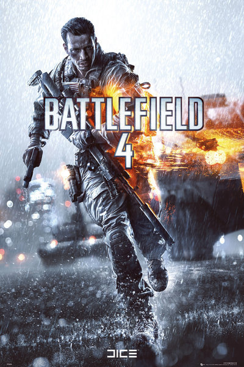

Select A Battlefield!
Select A Game Down Below!
Summary
"Battlefield 4," released in 2013, is a first-person shooter renowned for its thrilling multiplayer and cinematic single-player campaign. Players join Sergeant Daniel Recker and his squad, Tombstone, as they navigate a global conflict. Multiplayer supports up to 64 players and offers diverse modes like Conquest and Team Deathmatch. The game introduces "Levolution," dynamic events altering the battlefield, and boasts stunning visuals powered by the Frostbite 3 engine. Despite initial technical issues, it remains a favorite among fans for its intense battles and immersive gameplay.
More Detail
"Battlefield 4," launched in 2013, marked another milestone in the franchise's legacy, offering an engaging mix of single-player and multiplayer experiences. In the single-player campaign, players assume the role of Sergeant Daniel Recker, a member of the elite U.S. Special Forces squad known as Tombstone. The narrative unfolds in the midst of a global crisis sparked by rising tensions between the United States, China, and Russia. As Recker and his squad navigate through a series of missions across various locales, they uncover a conspiracy that threatens to plunge the world into chaos. The campaign is characterized by its cinematic storytelling, intense firefights, and stunning set-pieces, showcasing the scale and spectacle of modern warfare. However, it's the multiplayer component where "Battlefield 4" truly shines. Supporting up to 64 players on PC and consoles, multiplayer offers an expansive sandbox experience with diverse gameplay modes. The signature Conquest mode sees teams battling for control of key objectives across vast, open maps, while Team Deathmatch provides fast-paced infantry combat. Other modes like Rush, Domination, and Obliteration offer varied objectives and challenges, ensuring there's something for every type of player. The game introduces "Levolution," a dynamic feature that allows players to alter the battlefield during matches. This includes events such as collapsing buildings, flooding streets, and triggering landslides, which not only change the layout of the map but also impact gameplay strategies. "Battlefield 4" also emphasizes teamwork and player customization. Players can choose from four distinct classes—Assault, Engineer, Support, and Recon—each with its own unique weapons, gadgets, and abilities. Team coordination is crucial, whether it's repairing vehicles, providing cover fire, or executing coordinated assaults on enemy positions. Visually, "Battlefield 4" is stunning, thanks to the Frostbite 3 engine, which delivers highly detailed environments, realistic animations, and immersive sound design. From the urban sprawl of Shanghai to the frozen landscapes of Siberia, each map is a visually stunning and dynamic playground for players to explore and conquer. While "Battlefield 4" faced some technical issues at launch, including server instability and bugs, DICE worked diligently to address these concerns through post-launch updates and patches. Over time, the game evolved into a polished and highly praised multiplayer experience, earning it a dedicated fan base and cementing its status as a standout entry in the Battlefield series.